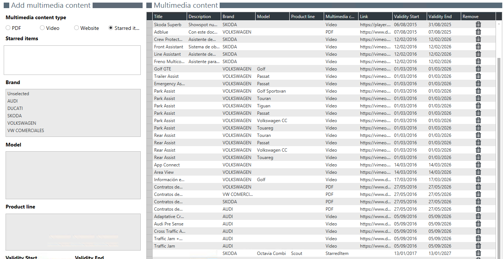

MULTIMEDIA MANAGER
Multimedia Manager lets us add links to multimedia content (pdf, video, web or featured elements) that will then be accesible in the Multimedia page, in First Contact.

Add multimedia content
We add new multimedia content attending to a selectd brand and version. To do so we just have to:
1. Select a type of content.
2. Write a name and a description for our content.
3. Add the link to the content.
5. Select Model year, Model Group and Versión.
6. Set vigency period.
 Featured element can only be added to versions.
Featured element can only be added to versions.